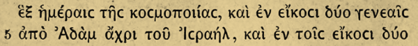

Optical Character Recognition Use a Scanned Book with Perseus Tools
Can't find what you are looking for? Is there a particular edition you think we should have? Now you can add it yourself! All you need to do is provide us with the page-scans and a little information about the volume you wish to digitise.
Your edition will be added to our collection, Scaife Digital Library, and made openly available for collaborative annotation and download. While we accept volumes in all languages, some may take longer to process than others (e.g. Non-Roman scripts like Arabic, Syriac, Hebrew, Chinese, etc.)
Scan a Book
You can scan the book yourself or request that we scan it.
Upload and Process
Transfer your scans to our service for processing.
Approve the Results
Check for errors, then get to work on your text!
Before you scan! Please check our scanning requirements to ensure that your scans can undergo OCR.
Before you Scan!
Make sure your scanner is set to create images that meet the following criteria:
Resolution before 400 - 600 DPI
Greyscale or Color mode (not black and white)
TIFF or PNG format (not JPG)
Images are not compressed in any way.
If available, scan in Document format rather than Image format
Important Copyright Notice: In order to avoid copyright violations, we can only accept scans of books whose author or editor was deceased before or in 1942. When there are multiple authors, all must have been deceased before or in 1942 for us to publish the book online.
Before you Upload!
Your scans must:
Be in portrait orient, rather than landscape.
Have facing pages split into their own files.
Be named or numbered so that they can be processed in order.
Make lines of text on the scans as level as possible (deskewed).
Upload your Scans
Drop images here to upload,
or upload from your computer.
Uploading File 2 of 27
Provide Metadata
While your files upload, please share what you know about them so they can be properly catalogued.
Pre-Process your Scans
This information speeds up the OCR processing engine, but is not mandatory.
Select a page that is entirely { target_language }
If there is no section that is predominantly in the target language, skip this section.
Which font is your text in?
If none of these look like the font of your text, skip this section.
Porson (also called "Teubner")

Griechische Antiqua
ZephGreek
All done!
Your scans have been placed in our OCR processing queue.
Place in Queue
3
Estimated Time to Process
More than 24 hours
We will email you when your scans are ready for review.